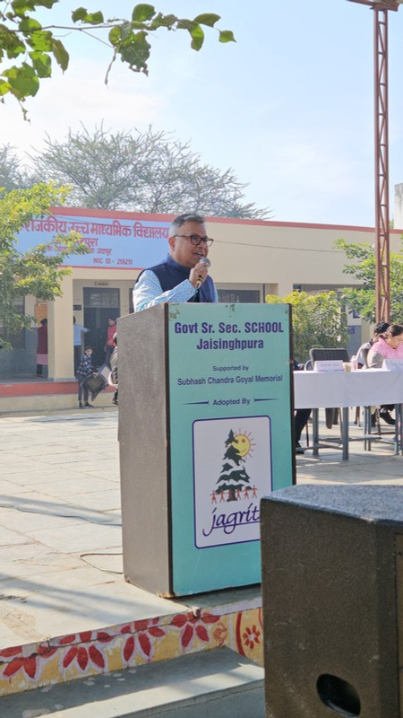

Shri Jaikrishan Jajoo श्री जयकृष्ण जाजू
Founder, Subhashish Group & Jagriti NGO संस्थापक, सुभाषीश समूह एवं जागृति एनजीओ
Mr. Jajoo talked about how he built his business from scratch and why he eventually started Jagriti NGO alongside it. He told students that running a company and running an NGO are not as different as they sound, since both need patience and a problem you genuinely care about. His suggestion to the room was simple: pick one issue in your own town that has bothered you for years, and start working on it now, without waiting for college to tell you who you are. श्री जाजू ने बताया कि उन्होंने अपना व्यापार शून्य से कैसे खड़ा किया, और उसी के साथ-साथ जागृति एनजीओ क्यों शुरू किया। उन्होंने छात्रों से कहा कि कंपनी चलाना और एनजीओ चलाना उतने अलग नहीं हैं जितना लगते हैं, क्योंकि दोनों में धैर्य चाहिए और एक ऐसी समस्या चाहिए जो आपको सच में परेशान करती हो। उनकी सलाह सीधी थी: अपने ही शहर की कोई एक समस्या चुनिए जो आपको सालों से खटकती हो, और कॉलेज के यह तय करने से पहले कि आप कौन हैं, उस पर काम शुरू कर दीजिए।